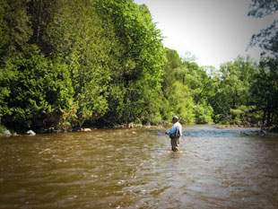
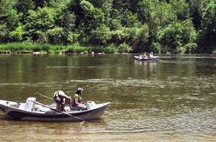
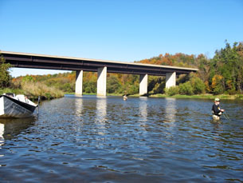

Grand River - Ontario Canada
Ontario’s Grand River is the largest of the Great Lakes tributaries that flow through the South Central part of the province. The Grand River drainage basin is approximately 6000 square kilometers of both warm and cold water streams that are inhabited by a large population of freshwater species. The fishing areas that we concentrate on are both cold water areas for trout and steelhead and the warm water areas which hold great numbers of bass and panfish.
Upper Grand River
The tailwater or (Upper Grand) section of the river has become known as a world class brown trout fishery. In the late 1980’s and early 1990’s, the river was classified as a cold water watershed due to the refit of the micro hydro dam known as Shand Dam. The dam was converted to a bottom draw which pulls the water from the depths of Belwood Lake and for a number of kilometers, the main river temperature is suitable for populations of trout. The species of choice were browns and the high nutrient concentrations from the prolific insect population provided the main food source for these brown trout. The tailwater section is primarily a hatchery-enhanced fishery, but there is proof of some natural reproduction. With the forage base so high, browns of the Upper Grand can get to good sizes and with the main food source being the insect population, any angler has a great chance of catching some incredibly large browns on dry flies, emergers or nymphs. Below the colder water of the upper Grand where the water temperatures start to rise, bass are the predominant species.
Middle Grand River
The Middle Grand is made up of both warmer water temperatures and cold water sections. The smallmouth are in great supply and are more than willing to take a good selection of your favorite bass patterns. Poppers and streamers are the favorite methods of catching bass, but because of the river’s prolific insect base, even bass can be readily taken on dries and nymphs. During the river’s major hatch times, bass feed on the abundant insects floating downstream and through the deeper pools where the bass tend to hang out. For approximately 20 kilometers, another cold water section of the Grand River is found. Ground seepage, underground springs and cold water tributaries that flow into the main river drive down the average water temperature, providing suitable conditions for trout. This area of the Grand River is home to a great population of rainbows and browns. This section of the river is much larger in size and is a great stretch for drift boats from which you can cover the pools and dry fly drifts that hold good numbers of wild trout. Once again, the large insect populations and a variety of stoneflies, mayflies and caddis provide the trout with a great forage base. Anglers land trophy browns and rainbows here each year with all methods of fly-fishing. It’s hard to say whether it’s the size of the river or the health of the species, but every year our clients and guides tell us that these are some of the hardest fighting trout they’ve ever encountered.
Lower Grand River
Proceed downstream and the river continues to grow in size and volume. Steelhead enter the Grand River at Lake Erie and will migrate upstream for 140 Kilometers into a number of smaller tributaries that provide them with the necessary substrate for natural reproduction and nursery waters. The Grand River is becoming known as one of the best Great Lakes tributaries for wild steelhead. Each year, thousands of these big rainbows make their way upstream only to reach what could be an impassable barrier- a dam that blocks the entire river with an approximate drop of 2-3 meters in height on a 60* angle. With good water flows, the strong healthy wild fish are powerful enough to not only jump the dam, but swim against the torrent of water cascading over the dam. Most hatchery strays that might come in from Lake Erie are left behind at that point. The dam creates a natural selection barrier, so for the anglers who put in their time on this river, the steelhead rewards are strong fighting fish with larger-than-average size. The river flows and depths are larger, so traditional-style anglers who like to swing flies, either two-handed or single-hand rods, do very well on these waters with this technique. This steelhead population has a wild background, and were born and foraged in the cold nursery waters of the tributaries and main river. As they were growing in size, their main food source were the insects of the Grand. Wild steelhead of this river will take dry flies, dead drift or waking. If you are willing to put some time into it, this Western method of catching steelhead is probably the most rewarding of all.
Book a Guided Fly Fishing Trip with Grindstone Angling
Contact us today to inquire about a guided trip on any of the great rivers in Ontario. You can call the shop at 905-689-0880 or using our guide trip inquiry form below. You can find out more about our services on our Ontario Fishing Guide Service page.